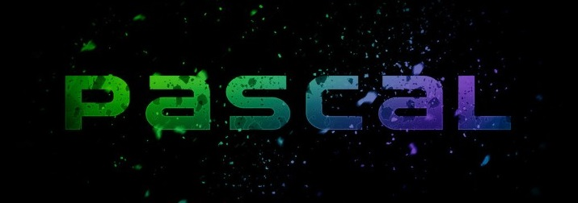

C
C este un limbaj de programare standardizat. Este implementat pe majoritatea platformelor de calcul existente azi, și este cel mai popular limbaj de programare pentru scrierea de software de sistem. Este apreciat pentru eficiența codului obiect generat de compilatoarele C, și pentru portabilitatea sa.
A fost dezvoltat la începutul anilor 1970 de Ken Thompson și Dennis Ritchie, care aveau nevoie de un limbaj simplu și portabil pentru scrierea nucleului sistemului de operare UNIX.
C este un limbaj de programare relativ minimalist ce operează în strânsă legătură cu hardware-ul, fiind cel mai apropiat de limbajul de asamblare față de majoritatea celorlalte limbaje de programare.
C este prezentat uneori ca „asamblor portabil”, făcându-se astfel diferențele principale față de limbajele de asamblare: codul unui program C poate fi compilat și rulat pe aproape orice tip de mașină (calculator), asemănător altor limbaje de programare, în timp ce limbajele de asamblare sunt specifice unui anumit model de mașină. Limbajul C aparține clasei limbajelor de nivel scăzut sau de nivel mediu, aceasta indicând strânsa legătură între interoperabilitate și echipamentul hardware.

C a fost creat având drept scop important de a face ca programele mari să poată fi scrise mai ușor și cu mai puține erori în paradigma programării procedurale, dar fără a pune un obstacole în scrierea compilatorului de C, care este încărcat de caracteristicile complexe ale limbajului. C are urmatoarele caracteristici importante:
- Este un limbaj de bază simplu, cu importante funcționalități cum ar fi funcțiile matematice sau cele de manipulare ale fișierelor
- Este focalizat pe paradigma programării procedurale, care facilitează programarea într-un mod structurat
- Utilizează un set simplu de tipuri de date ce împiedică multe operații neintenționate
- Folosește un limbaj preprocesor, preprocesorul C, pentru sarcini cum ar fi definirea de macrouri și includerea mai multor fișiere sursă
- Permite accesarea la nivel scăzut a memoriei calculatorului prin utilizarea pointerilor
- Permite folosirea parametrilor, care sunt comunicați funcțiilor prin valoare și nu prin referință
- Pointeri la funcții, ce permit forme rudimentare de închidere (engleză closure) și polimorfism
- Structuri de date sau tipuri de date agregate, definite de utilizator prin (struct), ce permit ca date înrudite să fie combinate și manipulate ca un întreg
Deși lista minusurilor limbajului C este destul de lungă, aceasta nu reprezintă un dezavantaj suficient de mare pentru inhiba utilizarea limbajului C în practică, deoarece permite ca noi compilatoare să poată fi scrise pe noi tipuri de platforme și pentru că permite programatorului să țină bine sub control programul pe care îl scrie. Acesta este unul din motivele care face ca un cod scris în C să fie mult mai eficient decât dacă ar fi scris în alte limbaje de programare. Numai un cod scris cu foarte mare grijă într-un limbaj de asamblare poate fi mai performant, deoarece are control integral asupra mașinii, dar performanța avansată a compilatoarelor, combinată cu complexitatea noilor tipuri de procesoare, a făcut ca limbajul C să fie preferat și să fie acceptat din ce în ce mai mult de programatori.
Hituri:
-
Unix
-
Python
-
Perl
-
PHP
Pascal
Pascal este unul dintre limbajele de programare de referință în știința calculatoarelor. Pascal a fost dezvoltat de elvețianul Niklaus Wirth în 1970 pentru a pune în practică programarea structurată, aceasta fiind mai ușor de compilat. Unul din marile sale avantaje este asemănarea cu limbajul natural limba engleză, ceea ce îl face limbajul ideal pentru cei care sunt la primul contact cu programarea. Pascal este bazat pe limbajul Algol și a fost denumit astfel în onoarea matematicianului Blaise Pascal, creditat pentru construirea primelor mașini de calcul numeric. Wirth a mai dezvoltat limbajele Modula-2 și Oberon, similare cu Pascal.
Cele mai populare implementări a acestui limbaj au fost Turbo Pascal și Borland Pascal, ambele ale firmei Borland cu versiuni pentru Macintosh și DOS, care i-au adăugat limbajului obiecte și au fost continuate cu versiuni destinate programării vizuale pentru Microsoft Windows (utilizate de mediul de dezvoltare Delphi) și pentru Linux (Kylix).
În prezent există și alte implementări mai mult sau mai puțin populare, dar gratuite, printre care se remarcă Free Pascal și GNU Pascal.
Deși în prezent este relativ rar folosit în industria software, el este încă util elevilor și studenților care doresc să se inițieze în programare. Spre deosebire de BASIC, care a stat în trecut la baza învățării programării, Pascal este un limbaj structurat. De aceea, el formează un anumit tip de gândire, similar limbajelor moderne, precum C++, dar nu deține complexitatea și abstractizarea acestuia din urmă, fiind mai ușor de înțeles datorită sintaxei simple și apropiate de pseudocod.
C++
C++ este un limbaj de programare general, compilat. Este un limbaj multi-paradigmă, cu verificarea statică a tipului variabilelor ce suportă programare procedurală, abstractizare a datelor, programare orientată pe obiecte. În anii 1990, C++ a devenit unul din cele mai populare limbaje de programare comerciale, rămânând astfel până azi.
Bjarne Stroustrup de la Bell Labs a dezvoltat C++ (inițial denumit C cu clase) în anii 1980, ca o serie de îmbunătățiri ale limbajului C. Acestea au început cu adăugarea noțiunii de clase, apoi de funcții virtuale, suprascrierea operatorilor, moștenire multiplă, șabloane (engleză template) și excepții. Limbajul de programare C++ a fost standardizat în 1998 ca și ISO 14882:1998, versiunea curentă fiind din 2003, ISO 14882:2003. Următoarea versiune standard, cunoscută informal ca C++0x, este în lucru.

Stroustrup a început să lucreze la C cu clase în 1979. Ideea creării unui nou limbaj a venit din experiența de programare pentru pregătirea tezei sale de doctorat. Stroustrup a descoperit că Simula avea facilități foarte utile pentru proiecte mari, însă era prea lent, în timp ce BCPL era rapid, însă nu era de nivel înalt și era nepotrivit pentru proiecte mari. Când a început să lucreze pentru Bell Labs, avea sarcina de a analiza nucleul UNIX referitor la calcul distribuit. Amintindu-și de experiența sa din perioada lucrării de doctorat, Stroustrup a început să îmbunătățească C cu facilități asemănătoare Simula. C a fost ales deoarece era rapid și portabil. La început facilitățile adaugate C-ului au fost clase, clase derivate, verificare a tipului, inline și argumente cu valori implicite.
În 1982, numele limbajului a fost schimbat de la C cu clase la C++. Au fost adaugate noi facilități, inclusiv funcții virtuale, supraîncărcarea operatorilor și a functiilor, referințe, constante, alocare dinamică, un control al tipului mai puternic și noua variantă de comentariu pe un singur rând (liniile care încep cu caracterele '//').
În 1985 a fost lansată prima ediție a cărții "The C++ Programming Language" (Limbajul de programare C++), oferind informații importante despre limbaj, care încă nu era un standard oficial. În 1989 a fost lansată versiunea 2.0 a C++. Au apărut acum moștenirea multiplă, clase abstracte, funcții statice, funcții constante și membri protected. În 1990 o altă carte a fost lansată, oferind suport pentru standarde viitoare. Ultimele adăugări includeau template-uri, excepții, spații de nume (namespace-uri) și tipul boolean.
O dată cu evoluția limbajului C++, a evoluat și o bibliotecă standard. Prima adăugire a fost biblioteca de intrări/ieșiri (I/O stream), care oferea facilități pentru a înlocui funcțiile tradiționale C cum ar fi printf și scanf. Mai târziu, printre cele mai semnificative adăugari la biblioteca standard a fost STL (Standard Template Library) (Biblioteca de formate standard). După ani de lucru, un comitet ANSI-ISO a standardizat C++ în 1998 (ISO/IEC 14882:1998).
Hituri:
-
Windows
-
Google Chrome
-
Sofware avioane F-35
Python
Python este un limbaj de programare dinamic multi-paradigmă, creat în 1989 de programatorul olandez Guido van Rossum. Van Rossum este și în ziua de astăzi un lider al comunității de dezvoltatori de software care lucrează la perfecționarea limbajul Python și implementarea de bază a acestuia, CPython, scrisă în C. Python este un limbaj multifuncțional folosit de exemplu de către companii ca Google sau Yahoo! pentru programarea aplicațiilor web, însă există și o serie de aplicații științifice sau de divertisment programate parțial sau în întregime în Python. Popularitatea în creștere, dar și puterea limbajului de programare Python au dus la adoptarea sa ca limbaj principal de dezvoltare de către programatori specializați și chiar și la predarea limbajului în unele medii universitare. Din aceleași motive, multe sisteme bazate pe Unix, inclusiv Linux, BSD și Mac OS X includ din start interpretatorul CPython.
Python pune accentul pe curățenia și simplitatea codului, iar sintaxa sa le permite dezvoltatorilor să exprime unele idei programatice într-o manieră mai clară și mai concisă decât în alte limbaje de programare ca C. În ceea ce privește paradigma de programare, Python poate servi ca limbaj pentru software de tipul object-oriented, dar permite și programarea imperativă, funcțională sau procedurală. Sistemul de tipizare este dinamic iar administrarea memoriei decurge automat prin intermediul unui serviciu „gunoier” (garbage collector). Alt avantaj al limbajului este existența unei ample biblioteci standard de metode.
Implementarea de referință a Python este scrisă în C și poartă deci numele de CPython. Această implementare este software liber și este administrată de fundația Python Software Foundation.

Python este un limbaj multi-paradigmă, concentrându-se asupra programării imperative, orientate pe obiecte și funcționale, ceea ce permite o flexibilitate mai mare în scrierea aplicațiilor. Din punctul de vedere al sintaxei, Python are un număr de contrucții și cuvinte cheie cunoscute oricărui programator, dar prezintă și un concept unic: nivelul de indentare are semnificație sintactică. Blocurile de cod sunt delimitate prin simplă indentare.
În C un astfel de blocuri sunt deseori desemnte prin acolade, {
O impunere similară există și în limbajul de programare Java, care forțează programatorii să delimiteze clasele în fișiere aparte, din motive de organizare și sporire a eficienței de scriere a softului în echipe.
Popularitatea limbajului este în creștere începând cu anul 2000, datorită faptului că Python permite crearea mai rapidă a aplicațiilor care nu cer viteze înalte de procesare a datelor. De asemenea este util ca limbaj de scriptare, utilizat în cadrul aplicațiilor scrise în alte limbaje. Modulele (bibliotecile) Python pot fi de asemenea scrise în C, compilate și importate în Python pentru a mări viteza de procesare.
Hituri:
-
Instagram
-
Pinterest
-
Spotify
-
YouTube